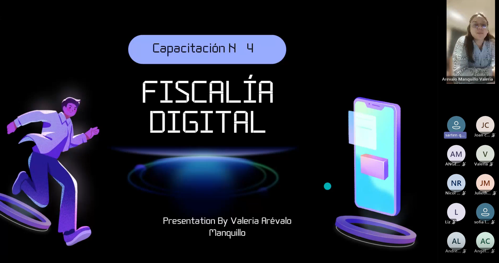
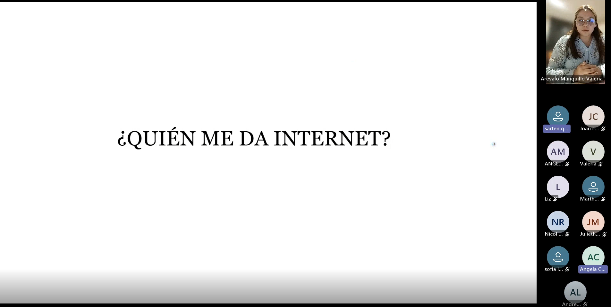
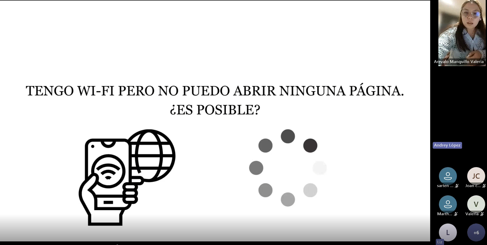
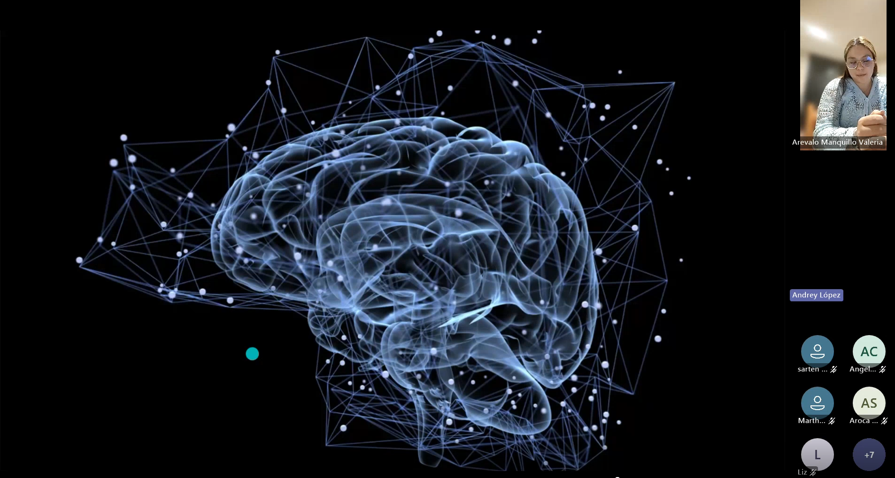
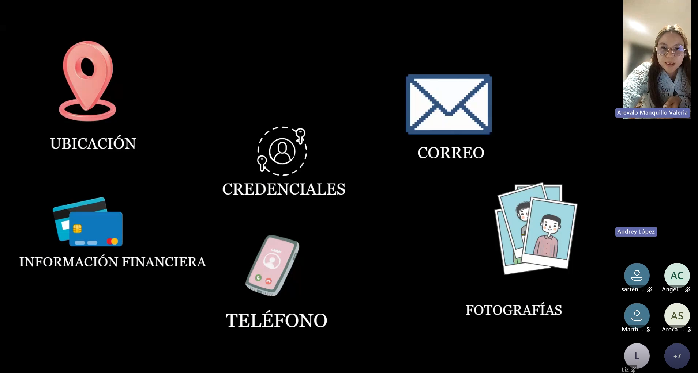
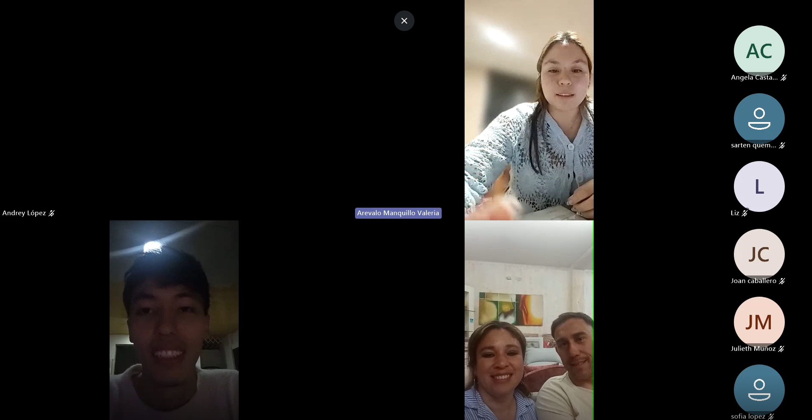

Contexto de la reunión
La cuarta reunión constituyó el cierre del proceso de capacitación desarrollado en el proyecto Fiscalía Digital. A diferencia de las sesiones anteriores, esta jornada estuvo orientada principalmente a integrar y aplicar los conocimientos adquiridos, utilizando situaciones cotidianas para ejercitar el pensamiento crítico, la formulación de hipótesis, el análisis de evidencias y la toma de decisiones informadas.
Durante la sesión, los participantes recuperaron aprendizajes previos, analizaron problemas relacionados con el funcionamiento de Internet y de las aplicaciones móviles, cuestionaron la seguridad de herramientas digitales y reflexionaron sobre la metodología utilizada durante todo el proceso formativo. Las evidencias seleccionadas muestran un nivel de participación más argumentativo y autónomo, lo que demuestra la evolución del grupo a lo largo de las cuatro reuniones.
Ficha técnica
- Reunión: 4
- Tema principal: Aplicación del pensamiento crítico y cierre del proceso formativo
- Modalidad: Virtual sincrónica
- Plataforma: Microsoft Teams
- Facilitadora: Valeria Arévalo Manquillo
- Duración aproximada: 1 hora y 20 minutos
Objetivos desarrollados
Integración del aprendizaje
Recuperar y relacionar los conocimientos adquiridos durante las reuniones anteriores para resolver nuevas situaciones.
Aplicación del pensamiento crítico
Formular hipótesis, analizar evidencias y tomar decisiones informadas frente a problemas cotidianos relacionados con Internet y la tecnología.
Seguridad digital
Cuestionar el funcionamiento y la confiabilidad de aplicaciones, permisos, antivirus y fuentes oficiales para proteger la información personal.
Evidencias de la reunión
A continuación se presentan los momentos con mayor participación identificados durante la Reunión 4. Cada evidencia muestra cómo los participantes integraron los aprendizajes de las sesiones anteriores y aplicaron el pensamiento crítico a situaciones reales relacionadas con la conectividad, la seguridad digital y el uso cotidiano de la tecnología.
Evidencia 1 · Recuperación de los aprendizajes de la Reunión 3
Minuto de referencia
09:10 – 10:30

Al comenzar la sesión, la facilitadora solicitó a los participantes recordar los principales conceptos trabajados durante la reunión anterior. Esta actividad permitió evaluar el nivel de retención y la capacidad para integrar aprendizajes relacionados con pensamiento crítico y sesgos cognitivos.
Sarten quemado realizó una recuperación muy completa de los contenidos, mencionando el sesgo de familiaridad, las noticias analizadas durante la sesión anterior —como el supuesto uso del 10 % del cerebro, la noticia sobre los murciélagos y la referencia a la Muralla China— y explicó que el grupo había utilizado diferentes fuentes para comprobar si dichas afirmaciones eran verdaderas o falsas.
Además, relacionó estos aprendizajes con la necesidad de buscar fuentes confiables y contrastar información antes de aceptar una afirmación como verdadera, lo que evidenció no solo memoria de los contenidos, sino también comprensión y transferencia del aprendizaje.
Evidencia 2 · ¿Quién nos proporciona Internet?
Minuto de referencia
22:47 – 23:10

En este momento de la reunión, la facilitadora planteó una pregunta aparentemente sencilla: ¿Quién nos proporciona Internet y cómo llega hasta nuestros hogares?. A partir de esta pregunta, los participantes construyeron de manera colaborativa un concepto técnico relacionado con el funcionamiento básico de las redes de comunicación.
Sarten quemado respondió inicialmente que el Internet es proporcionado por el operador del servicio, mientras que Angela complementó la idea identificando al proveedor del servicio de Internet. Posteriormente, Martha incorporó el concepto de fibra óptica, ampliando la explicación sobre el medio físico mediante el cual la conexión llega hasta los usuarios.
La facilitadora integró las respuestas para explicar la relación entre proveedores, infraestructura y conectividad, mostrando cómo un concepto técnico puede comprenderse a partir de los conocimientos previos de los participantes.
Evidencia 3 · ¿Es posible tener Wi-Fi pero no poder abrir una página?
Minuto de referencia
25:00 – 32:20

Este fue uno de los momentos más significativos de toda la reunión y constituye una de las mejores evidencias de aplicación del pensamiento crítico desarrolladas durante el proyecto. La facilitadora planteó una situación cotidiana: tener conexión Wi-Fi en el teléfono móvil, pero no poder abrir una página web, invitando a los participantes a explicar qué podría estar ocurriendo.
Martha respondió inicialmente que no consideraba posible esa situación. Posteriormente, Liz compartió una experiencia personal en la que el dispositivo mostraba conexión Wi-Fi, pero determinadas páginas no cargaban correctamente. A partir de ese aporte, Andrey y Sarten quemado comenzaron a analizar diferentes hipótesis relacionadas con la conectividad, el funcionamiento de los servidores y los posibles problemas específicos de una página web.
Sarten quemado propuso que la situación podía deberse a una saturación del servidor o a un problema específico del sitio web, mientras que la facilitadora utilizó el ejercicio para demostrar cómo aplicar el pensamiento crítico: no aceptar la primera explicación, formular preguntas, analizar alternativas, buscar evidencia y tomar una decisión fundamentada.
Evidencia 4 · Riesgos de descargar aplicaciones y proteger los datos personales
Minuto de referencia
1:16:00 – 1:18:00

En este momento de la reunión, un participante planteó una preocupación muy concreta relacionada con la seguridad de las aplicaciones móviles, preguntando si los antivirus descargados desde Google Play Store realmente protegen la información personal o si podrían estar recopilando datos del usuario.
A partir de esta inquietud, se desarrolló una conversación sobre aplicaciones, permisos, archivos APK, fuentes oficiales y protección de datos personales. La facilitadora explicó que no basta con descargar una aplicación desde una tienda conocida, sino que también es necesario revisar el desarrollador, los permisos solicitados, las valoraciones de otros usuarios y la legitimidad de la fuente desde la cual se instala el software.
La discusión evidenció que los participantes ya no asumían automáticamente que una aplicación era segura, sino que comenzaban a cuestionar el funcionamiento de las herramientas digitales que utilizan diariamente, aplicando criterios de análisis y prevención de riesgos.
Evidencia 5 · Aplicación del pensamiento crítico a situaciones cotidianas
Minuto de referencia
32:20 en adelante

Después del ejercicio relacionado con el problema del Wi-Fi, la facilitadora invitó a los participantes a reflexionar sobre cómo podían aplicar el pensamiento crítico a las situaciones que viven diariamente con sus dispositivos, aplicaciones y conexiones a Internet.
Tomando como ejemplo el análisis realizado por el grupo, explicó que el proceso seguido durante el ejercicio podía convertirse en una estrategia general para enfrentar situaciones relacionadas con la tecnología: no aceptar la primera explicación, formular preguntas, analizar diferentes posibilidades, buscar evidencia y tomar una decisión fundamentada.
Los participantes reconocieron que este procedimiento puede utilizarse no solo para resolver problemas de conectividad, sino también para verificar noticias, evaluar aplicaciones, identificar fraudes digitales y tomar decisiones más informadas en su vida cotidiana.
Evidencia 6 · Reflexión final sobre los aprendizajes y la capacitación
Momento de referencia
Cierre de la reunión

En el cierre de la última reunión, los participantes realizaron una valoración general de la experiencia de capacitación desarrollada durante el proyecto Fiscalía Digital. Este momento permitió recoger percepciones sobre la metodología, los recursos utilizados y el impacto del proceso formativo.
Sarten quemado ofreció una valoración especialmente detallada, destacando la utilidad de las diapositivas, las preguntas orientadoras, las actividades didácticas y el material audiovisual como elementos que facilitaron la comprensión de los temas y promovieron una participación activa durante las cuatro sesiones.
La facilitadora agradeció la participación del grupo y resaltó que el objetivo del proyecto había sido desarrollar ciudadanos digitales capaces de analizar información, cuestionar contenidos, proteger sus datos personales y tomar decisiones responsables en los entornos digitales.
Resultados observados durante la reunión
La cuarta reunión permitió evidenciar la consolidación de los aprendizajes desarrollados a lo largo de todo el proceso formativo. Los participantes demostraron capacidad para recuperar conocimientos de sesiones anteriores, formular hipótesis, analizar problemas cotidianos, cuestionar herramientas digitales y aplicar el pensamiento crítico de manera autónoma.
El ejercicio relacionado con el funcionamiento del Wi-Fi y la imposibilidad de acceder a una página web representó el momento de mayor impacto pedagógico, ya que el grupo aplicó un proceso completo de razonamiento, análisis de evidencia y toma de decisiones fundamentadas, evidenciando una evolución significativa respecto a las primeras reuniones del proyecto.
Resultado principal
La reunión consolidó las competencias relacionadas con pensamiento crítico, resolución de problemas, seguridad digital, protección de datos personales y evaluación de fuentes de información, demostrando que los participantes lograron integrar los conocimientos adquiridos durante las cuatro sesiones del proyecto Fiscalía Digital.
Cierre del proceso formativo
La Reunión 4 representó el cierre del proceso de formación desarrollado en el proyecto Conectando al Futuro: Inclusión Digital. A lo largo de las cuatro reuniones, los participantes transitaron desde la comprensión inicial de conceptos relacionados con ciudadanía digital y desinformación, hasta la aplicación autónoma del pensamiento crítico para resolver situaciones reales vinculadas con Internet, la seguridad digital y la verificación de información.
El proyecto permitió fortalecer competencias técnicas, analíticas y ciudadanas, promoviendo una actitud responsable frente a la información que circula en los entornos digitales y consolidando el papel de los participantes como Investigadores Digitales, capaces de cuestionar, verificar y actuar con criterio antes de compartir contenidos o tomar decisiones en el ámbito digital.
Conclusión general del proyecto
El proceso desarrollado mediante la estrategia Fiscalía Digital evidenció que la alfabetización digital efectiva no depende únicamente del aprendizaje de herramientas tecnológicas, sino del fortalecimiento del pensamiento crítico, la capacidad de verificar información, el reconocimiento de sesgos cognitivos y la responsabilidad ciudadana en los entornos digitales.
Final del repositorio documental
Has llegado al final de la documentación correspondiente a las cuatro reuniones del proyecto Fiscalía Digital. Puedes regresar al repositorio principal de sesiones para consultar cualquier reunión nuevamente o volver al sitio principal del proyecto para explorar las entradas, recursos y materiales desarrollados durante la práctica social.